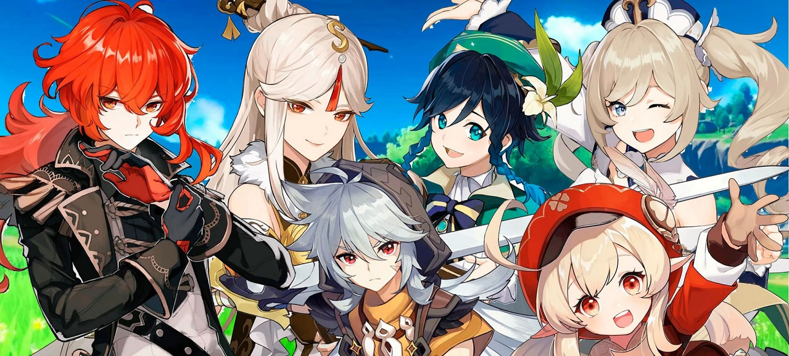
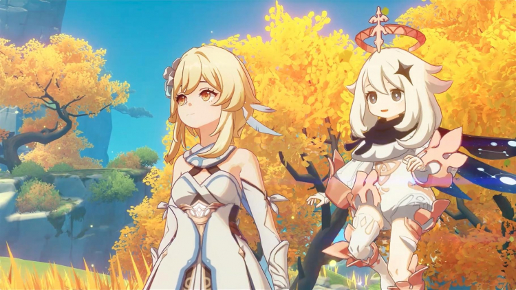

Genshin Impact
Genshin Impact (кіт. 原神 Юаньшень, яп. 原神 Генсін, буквально: Початковий бог) — комп'ютерна гра в жанрі action-adventure з відкритим світом та елементами RPG, розроблена китайською компанією miHoYo Limited. Гра розповсюджується за допомогою цифрової дистрибуції за моделлю free-to-play, але має внутрішньоігровий магазин, що використовує реальну валюту. В основі Genshin Impact лежить система «гатя», яка називається у грі «молитвою». Дія Genshin Impact відбувається у фентезійному світі Тейват, який є домом для семи різних народів, кожен з яких пов'язаний з окремою стихією та керується окремим богом, який називається у всесвіті гри «Архонт». Історія йде за Мандрівником, який ходить незліченними світами зі своїм братом-близнюком, перш ніж розлучитися в Тейваті. Разом зі своєю супутницею-компаньйоном Паймон Мандрівник вирушає на пошуки свого втраченого брата, одночасно беручи участь у справах народів Тейвата.

Сеттинг Дія Genshin Impact відбувається у світі Тейват, що складається з семи основних націй: Мондштадт, Ліюе, Іназума, Сумеру, Фонтейн, Натлан і Снігова, кожною з яких править бог. через великі, героїчні подвиги. Під землею лежать руїни держави Хаенрі'а, знищеної богами за 500 років до подій гри. На відміну від семи основних держав, Хаенрі'а не керувалася богом. Персонаж гравця, Мандрівник (чоловік або жінка, залежно від вибору гравця), розлучений зі своїм близнюком і опиняється у пастці Тейваті. Разом зі своїм супутником, Паймоном, вони вирушають у подорож Тейватом у пошуках свого втраченого брата чи сестри. Чоловіка-мандрівника звуть Ефір, а жінку-мандрівницю – Люміна; хоча гравці можуть вибрати ім'я, яким вони хочуть називатися, брат або сестра Мандрівника (той близнюк, який не був обраний на початку гри) звертається до Мандрівника або Ефір, або Люміна (залежно від статі обраного гравцем близнюка), незалежно від їхнього власного імені .